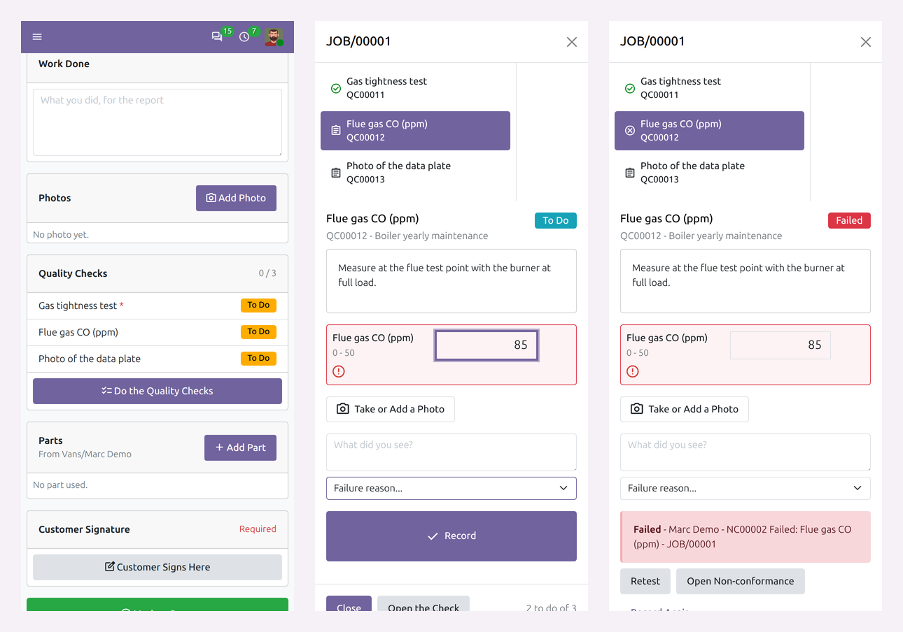
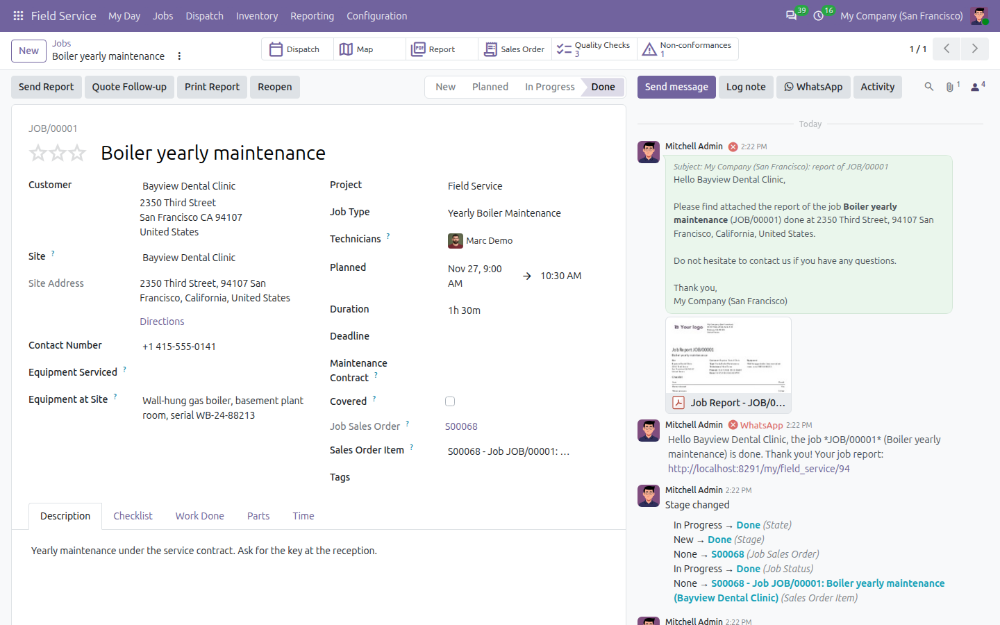
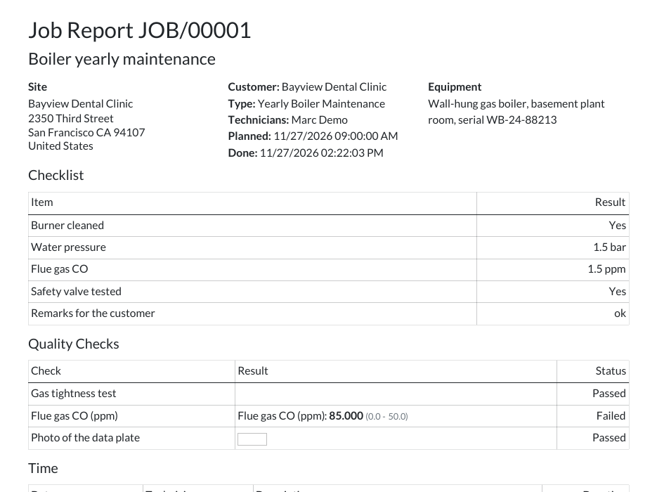
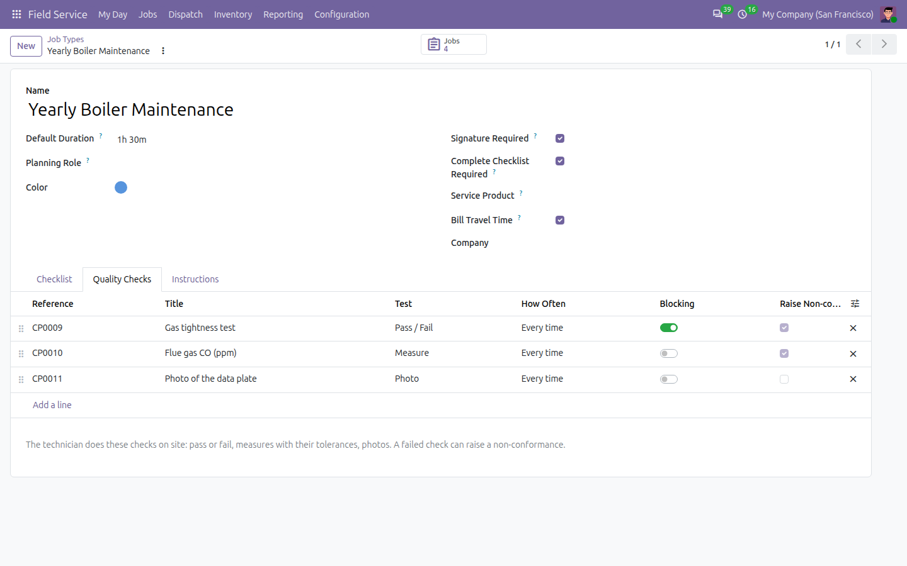
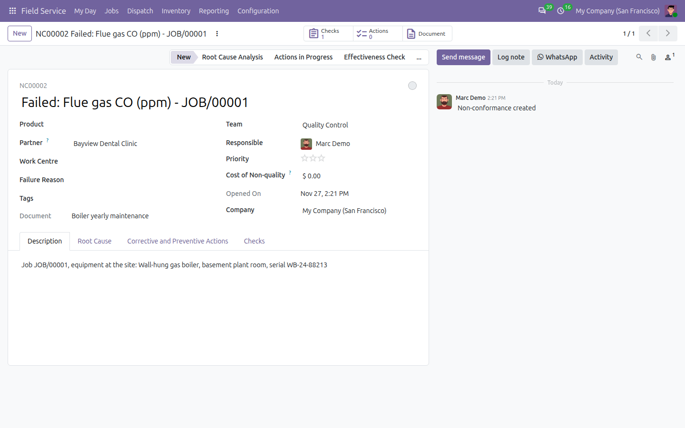

Quality worksheets on field service jobs: the technician records the checks on site, failures raise non-conformances, results go in the job report.
The quality app you already use, on the jobs at the customer site.
Screens from a test database with the demo data.





Your rating helps others find it; your requests and pull requests decide what comes next.
★ Rate us on Odoo Apps 💡 Request a feature 🐛 Report an issue ★ Star us on GitHub